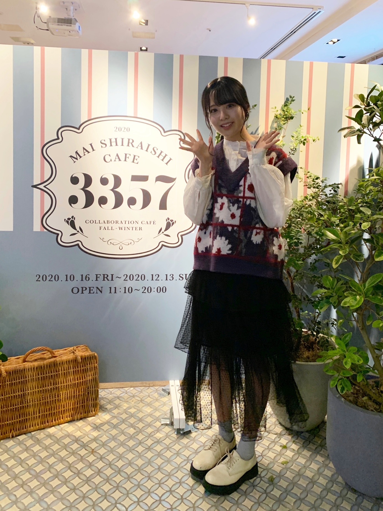
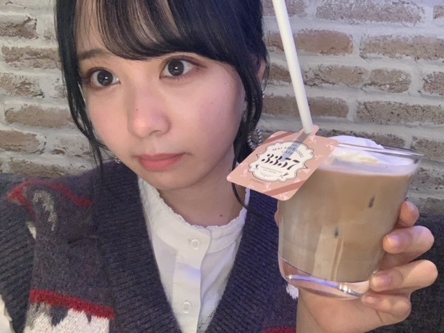
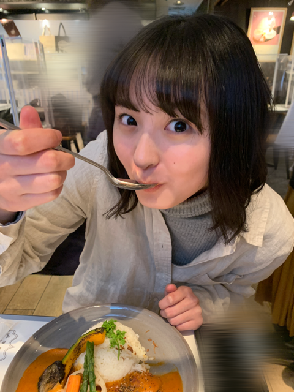
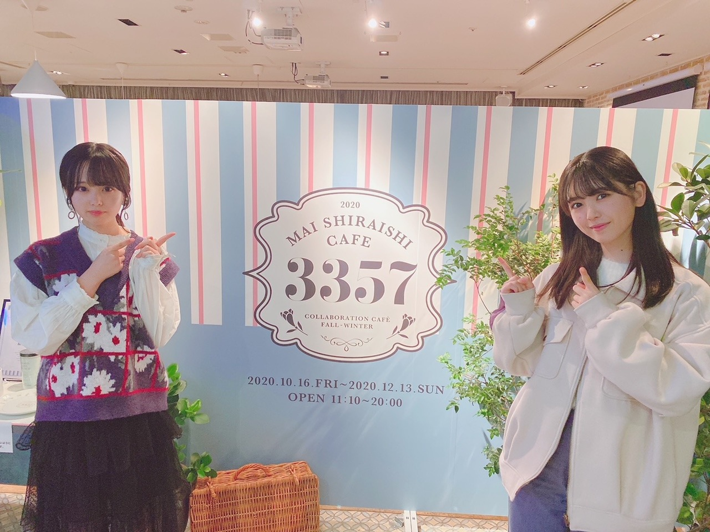
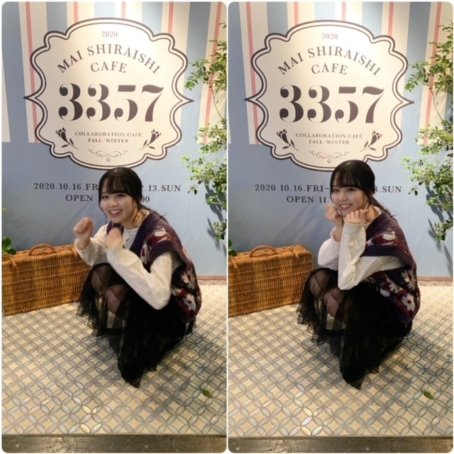

2020/1114Sat温かさ2倍。佐藤璃果
こんにちは~
乃木坂46 (新)4期生 岩手県出身
佐藤璃果です


白石麻衣さんのコラボカフェに
行かせて頂きました！⸜( •⌄• )⸝
何故かフラッシュがたかれてしまいました。
私はこちらのカフェラテを頂きました。
皆さんも是非！行ってみてくださいね
行った方は何を食べたのかとか感想を
書いてくださると嬉しいです。
私このカフェラテを飲むまで、
1日カフェインを摂取していなかったので、
余計に美味しく感じました。
上に乗っているホイップクリームのクリーミーさがとても相性が良くて美味しかったです。
☺︎

向かい側はカレーを
食べるさくちゃんでした。
沢山写真撮っちゃいました₍ᐢ.ˬ.ᐢ₎
沢山お話出来て嬉しかったです。
緊張して質問攻めしてしまったけれど
色々知れて嬉しかったです。
お話出来て幸せでした~
カレー好きな共通点発見です。
カレーを美味しそうに食べていました。
写真を撮る時だけ透明な
カバーをピラッとさせて頂きました。
そして！

あやめんとマネージャーさんに
撮って貰ったのです！
｢おはようでやんす｣と言ってくる
あやめん可愛いです~❅*॰ॱ
~~~~~~~~~~~~~~~~~~~
そして、11月12日、｢のぎおび｣
ありがとうございました。
次は緊張しないで出来るといいなぁあ。
皆さんとコミュニケーションが取れて
とてもとても嬉しかったです。
高山さんからの宿題も嬉しかったです。
いつか高山さんに、私に似合う髪型を教えて欲しいです( ˊ꒳ˋ ) ᐝ
桃子さんは麦茶が好きなんですね！
素敵だぁ、
~~~~~~~~~~~~~~~~~~~
11月10日、阪口珠美さん
❁お誕生日おめでとうございます❁
オシャレで立ち姿から綺麗な珠美さん！
ダンスもしなやかで綺麗で...素敵です。
この間、撮影の際に、その衣装可愛い~！
とサラッとお話して下さったことが
とてもとても嬉しかったです︎︎︎︎︎☺︎
たまたま、私と珠美さんと久保さんで
少し同じになった時に、
同い年だもんね！と話してくださって...
珠美さんが私を同い年だと認識してくださっていた事が嬉しかったです！
これからお話出来たら嬉しいです！
素敵な一年になりますように。
~~~質問~~~
〇乾燥肌に悩んでいるけど、良い対策はあるかな？
一緒にパック返ししましょー
〇ベロアと言えば額縁衣装ですが（？）、璃果ちゃんは着てみたい衣装ってありますか？
確かに！！
期待衣装たくさんあるなぁ、、、
額縁衣装も憧れですきです。
〇最近ハマってる飲み物とかはありますか？？
相変わらずコーヒーと
レモン水です。
〇らじらーに出る時に意識してやったこととかある？？
声を小さくならないようにすることと、
表情が見えないので、明るい声をより意識
受け身にならない
などなど色々です。
聞いてくださってありがとうございます。
まだまだ課題が沢山です...
〇年越しの瞬間ってなにしてるの？
普段なかなか会えない他校のお友達と
一緒に神社に行くの！
初詣！
〇好きなパンはありますか？
デニッシュ、
タルト、キッシュ(パンでは無いかも、、)
塩パン、、、、、、etc
〇昨日のらじらーすごく話すの上手いなぁって思ってんですけどお喋りは好きですか？
全然上手くないですよ！
でも今まで上手く話せなくて後悔ばかりだったので少しでもそう思って頂けたら幸いです。
好きです。
〇褒める時のコツはなんですか？
この人いい人素敵な人って
思うこと
〇璃果ちゃんは癖っ毛？元からまっすぐ？？
まっすぐです！
〇質問！俺も東北出身なんだけどいつか握手会が始まったら東北弁で話しかけてもいい？笑
話してけらい~！
〇りかちゃん的に初めましての人とかと楽しくお話できるコツとかありますか？？
私は、食の話しがちです。
あとは、地元のお話をお互いにします！
~~~~~~~~~~~~~~~~~~~
明日はるなぴです。
るなぴは偉いよ~~
~~~~~~~~~~~~~~~~~~
皆さんにとって
素敵な1日になりますように。

またね。
好きな卵料理はなんですか？
私はゆで卵＋塩
#41 りか
コメント(282)
沖縄のコラボカフェに行ったよ！
ビターチョコレートパフェとカフェラテのホットを頂きました！！どちらもすごく美味しかったよ！パフェは程よい甘さで美味しかったです！ちなみにカフェラテはキャラメルを選びました☺️
好きな卵料理はスクランブルエッグ＋ケチャップ！！
コメント、失礼します！
ブログ更新、ありがとう！
読ませて頂きましたー。
明日まで忙しいので、長めのコメントはまた書くね。
それでは、この辺で。
おやすりかちゃんー
前回忙しくてコメントできなくてごめんね
まいやんのカフェに行ったんだー
私はまだ仕事で忙しくて行けてないけど、りかちゃんが撮った写真で見た感じでは美味しそうで、終わるまでには行ってみたいですね
そういえば、のぎおび見ましたよー
お団子ヘアーのりかちゃんも可愛かったし、ストレートのりかちゃんも可愛くて、本当に私からしたらどんな髪型のりかちゃんも可愛かった。
りかちゃんにも素敵な1日になるますように。
ぱと◢璃果坂より
3357カフェ！！！
僕はまだ行けてないので余計に行きたくなりました
カフェラテと璃果ちゃんすっごく可愛い...
あやめんとのツーショット好きすぎてやばいです。
2人とも天使ですね
-----------------------------
のぎおび見ましたよ～！
直前まで授業を受けてて見れるか不安でしたが、全力ダッシュで帰ってなんとか間に合いました。笑
璃果ちゃんが｢1人でモバメみたいなことしてる｣って言ってたけどどんなこと書いてるんだろうってめちゃくちゃ気になっちゃいました！
モバメ始まる日が楽しみで仕方ないです～！
ほっぺに手を当てる璃果ちゃんも超可愛かった...！
-----------------------------
質問です↓
・4期生の中で1番ギャップがあったなって思う子はいますか？
・卒コンの時白石さんとのツーショットって撮りましたか？
・瑠璃の近況が聞きたいです...！
ぜひ教えてください～！
-----------------------------
乃木フェス20連したけど璃果ちゃん出ませんでした
残りの期間もっと石貯めて当てられるように頑張ります...！！！！
-----------------------------
乃木中で26枚目シングルの選抜発表があるということでめちゃくちゃドキドキしてます。
白石さんが卒業されてから初のシングルなのもあってすごく楽しみです！！
-----------------------------
好きな卵料理はオムライスですかね！
ふわとろなやつ食べたいです！笑
次回のブログも楽しみにしてます！
大好きです〜！！！
あきひろ
わしなんか
冷食の そば飯に レトルトカレーかけて
缶コーヒー 飲んでるけど 笑 。。
まあ 価値観 は 人それぞれ..
本人が ハッピーで いれたなら それで ok!! や
チャァオ〜〜!☆彡
りかちゃんも、さくちゃんと同じカレーは食べた〜〜❔❤️❤️❤️❤️❤️笑顔
(＠＾▽゜＠）ゞ❤️❤️❤️
❇️❇️おすまし！⚜️❇️⭐彡
私もまいやんカフェ行きたかった〜(´TωT｀)北海道住みで、札幌でしかやってなくて、コロナやばいから、行けなかった。。。
〇質問です！
・おすすめのハンドクリーム、化粧水ありますか！？
教えてください^^*
じゃあまたね(ヾ(´・ω・｀)
凄く見たかったので見れ
て良かったです。
アイシャドウ似合って
いましたね。
また違う雰囲気の目に
魅了されました。
お洋服もかわいい。
ニットがとっても
似合うんですね。
髪型。
リクエストしてみます。
私は。
三つ編みポニーテール
が、凄く見たいです。
璃果さんは必ず似合う
でしょう。
長さや幅などひとえに
三つ編みポニーテール
と言っても沢山あるので
私は好きです。
きっちり編んだり
割とふわっと編んだり。
前髪をつくるのか
おでこを出すのか。
編む所以外をどうするのか
などによっても変わって
きますね。
とっても見たいです。
とっても。
寂しい夜があると仰って
いませんでしたか。
そんな夜は。
目を閉じて。
パンプキンポンプキン
と、3回、心の中で
唱えてください。
おもちゃ箱をひっくり
返した様な楽しい夢が
その夜に見れるかも
しれません。
またほっぺたが赤くなる
ところを見せてください。
コラボカフェ行ったんだね。いつか行きたいな。
のぎおびお疲れ様！！次回も楽しみにしているよ。
ー質問ー
・冬の防寒は最大でどのくらいまでする？
・呼ばれたいあだ名ってあるかな？
・写真集を発売するならどこで撮影したい？
・質問というかお願い！メガネをかけた姿も見てみたいな！
ありがとう！次回も楽しみにしているよ。
まず最初に
「璃果ちゃんは癖っ毛？元からまっすぐ？？」
っていう質問に答えてくれてありがとう( ᵒ̴̶̷᷄꒳ᵒ̴̶̷᷅ )♡
璃果ちゃんは元からまっすぐストレートなんだね！
いいなぁ羨ましい……
私は癖っ毛がひどいからすぐ髪が曲がるの( ; _ ; )
朝起きたらいつも髪がハネてる(´._.`)ｼｭﾝ
だからストレートだとセットするの楽そう~！
逆に髪まっすぐで困ったことある？？
┈┈┈┈┈┈┈ ❁ ❁ ❁ ┈┈┈┈┈┈┈┈
まいやんのカフェ行ったんだね~！ ᐝ
私は行ってないんだけど、カフェラテ美味しそ~☺︎
璃果ちゃんはコーヒーはブラックでも飲める？？
さくらちゃんの写真可愛い~！！♡♡
さくらちゃんと璃果ちゃんは
私にとって4期のダブル推しだから
絡んでるところ見れて嬉しい❀(*´▽`*)❀
さくらちゃんとどんなお話したんだろ~！！！
もしよかったら教えてくれたら嬉しいな☺︎
┈┈┈┈┈┈┈ ❁ ❁ ❁ ┈┈┈┈┈┈┈┈
あとね、私気づいちゃったよ~！！！！！
まいやんのカフェで着てるニットのベスト服、
この間ののぎおびでも着てたでしょ~！！！
あとだいぶ前のブログでも着てるの載せてた！！
その服めっちゃ愛用してるんだね！♡
たしかに可愛いし璃果ちゃんに似合ってるから
じゃんじゃん着ていいと思う！！！笑
こうやって璃果ちゃんのことを
たくさん知って気づくことができて
私嬉しいし楽しい！！！❤︎
これからももっと知っていきたいな(*ˊˋ*)
┈┈┈┈┈┈┈ ❁ ❁ ❁ ┈┈┈┈┈┈┈┈
のぎおびお疲れ様！見たよ~！！
のぎおびについての感想っていうかコメントは
前回の璃果ちゃんのブログに書いたから
見てくれたら嬉しいな☺︎
┈┈┈┈┈┈┈ ❁ ❁ ❁ ┈┈┈┈┈┈┈┈
【質問】
・璃果ちゃんのおすすめのハンドクリームってある？？
・まいやんのカフェではカフェラテしか飲んでないの~？？
・璃果ちゃんの思うご飯のお供No. 1は？？
質問返してくれてありがとう(｡•ᴗ•｡)♡
本当にコメント読んでくれてるんだぁ~！
って思ってとっても嬉しい！！！(*´`)ｷｭﾝ
また読んでくれたら嬉しいな☺︎
またブログ更新待ってるね~❀
*⑅୨୧まなみん୨୧⑅*
りかちゃん可愛くて終始可愛いって言ってた笑まいやんカフェ行ってきたんだね！4期みんなといったのかな？？俺も行ってみたいな〜さくちゃんのお写真も可愛いね！りかちゃんのお洋服もオシャレで可愛くてスキ！またのブログ更新たのしみにしてるねー
またねっ
今回は早めにコメント書きます！
（褒めてください！なんて贅沢は言えないので胸にしまっておきます）
白石さんのカフェ！！素直に羨ましいです！！
コーヒーの苦さを知るりかちゃんだからこそ、ホイップクリームの甘さ、濃厚さに気づけたのかなと思うと、自分もブラックコーヒーを飲もうかな？なんて思います笑（いつも糖分求めちゃって甘いの飲んでしまいます）
同期のメンバーのみんなと仲良くしているエピソードが聞けてすごい嬉しいです…！
4期生のみんなが好きですし、りかちゃんが1番好きです…！
りかちゃんのことを考えると不思議と力が湧いてくるんです、
勇気をくれてありがとう！大好きです！
寒くなってきたのでかまぼこを入れた鍋を食べたいですね…！
また書きます！！
今日も更新ありがとう！！
コラボカフェ羨ましいです！
行きたいなー！
のぎおび見ました！
緊張して顔を赤くしてるのが
かわいかったですよ！
僕は髪型おだんごがすきです。
ゆで卵シンプル！
ぼくもすきです！
またね。
4期ちゃんみんな
カワイイネェ。
もちろんりかぴも
カワイイネェっ。
さくちゃん、あやめんと素敵な思い出を作れたようで何よりです！
らじらーサンデーものぎおびもとても楽しかったですよ～
まいやんのコラボカフェにて
カフェラテとコラボしてる
りかちゃん可愛い！！
のぎおびお疲れ様でした！
やっぱりリアルタイムでお顔を見てお話したり、声を聞けたりするっていいですね〜
元気そうなお姿見れて嬉しかったです！
卵料理はやっぱりオムライスですかねー！
ずっと好きですオムライス！
寒さが厳しくなり、冬がすぐそこまで来ていますね。
お体にお気をつけてお過ごしください！
のぎおび良かったですよ
またももちゃんのモノマネ見せたくださいね笑
質問なんですけど他に得意なモノマネとかありますか？
今日も一日おつかれさま〜
質問
4期生ライブへの意気込みをどうぞ！！
まいやんカフェ行ったよー！！
ローストビーフ丼とレモネードボトル頼んだ！！
ローストビーフ丼は見た目もおしゃれで、野菜もたっぷり入ってて美味しかった！
レモネードボトルは映えます笑
味も美味しかったし、ボトル持ち帰れるのがまたいい！！
ほんまに楽しかった！
のぎおびお疲れ様。
りかちゃんの声やっぱり好き。
スクショタイムのりかちゃんが可愛すぎました。
たくさん撮らせてもらいました笑
また楽しみにしてるね！
好きな卵料理はシンプルに卵焼き。
でもスコッチエッグも好きかな。
また食べてみて。
ではでは体調には気をつけて。
次のブログも待ってます。
いつもありがとう。
カフェ行ったんだね
羨ましい
のぎおび観たよ
可愛いかったよ
緊張は大分取れてきたね
好きな玉子料理はオムレツです
ブログ更新ありがと！
璃果ちゃん、あ、んだりかちゃんは分からないかもだけど乃木フェスに新4期生が追加されてけっこう引いたのに全然璃果ちゃん出ない〜〜〜
showroom顔赤くなっててめんこいね〜笑笑
だまりかします｡
ーーーーーーー質問ーーーーーーーー
最近一人暮らしで鍋ばっか食べてるけど璃果ちゃんはなにをよく食べてる？
*歳は19で璃果ちゃんより5ヶ月はやく生まれた3月生まれです！
今日も可愛いです
癒されます♪♪♪
SHOWROOMめちゃめちゃ可愛かったです。ずっと、応援してます。
「らじらー！」での受け答え方とか反応とかが
上手すぎて、楽しさはもちろん，感心して聞いてしまいましたw
他の4期生メンバーとの距離が凄く縮まってるみたいで良かったぁ(´∇｀)これからも仲良しエピソードが楽しみだぁ
質問！？
○スマホのロック画面にピッタリな璃果ちゃんの写真をあげて欲しいです！
ブログの更新ありがとうございます︎☺︎
夜更かしをしたせいで今日は17時に起床しちゃって、1日を無駄にした気がして悲しかったんです…
でも璃果ちゃんのブログを読んだら元気が出ました
┈┈┈┈┈┈┈┈┈┈
まいやんのコラボカフェいいですね´ω`*
内装の色合いが可愛い♡
のぎおび配信の日に行ったのかな…？
私は都合が合わず、行けそうにないのが残念です(´•ᴗ•̥`)
さくちゃん、あやめんとの楽しいエピソードも共有してくださってありがとうございます！
同じ4期生同士仲良くされていることが伝わり、嬉しい気持ちでいっぱいです( ¨̮ )
┈┈┈┈┈┈┈┈┈┈
のぎおび配信お疲れ様でした
下ろした髪からポニーテール・ツインテール・ハーフツイン・三つ編み等様々な可愛い髪型を見られて眼福でしたꪔ̤̮
璃果ちゃんはお人形さんみたいに可愛いのでどんな髪型でも似合いますね( ˶ ̇ ̵ ̇˶ )
私は璃果ちゃんのお団子ヘアがまた見たいです…！
配信では璃果ちゃんから緊張を感じられない程楽しそうにされていて、私も楽しく幸せな時間を過ごさせていただきました！
ありがとうございました( ˘ᵕ˘ )❤︎
┈┈┈┈┈┈┈┈┈┈
璃果ちゃんからの質問にお答えしますね…！
私の好きな卵料理は、オムレツとだし巻き玉子です！
卵料理が好きなのでゆで卵も好きですし、本当はもっと沢山あるのですが、特に好きなのが上記の2つです♪
ちなみに、璃果ちゃんののぎおび配信の日には煮卵と茶碗蒸しを食べました( ˙༥˙ )
それでは、またね(๑ ˙˘˙)/
素敵な週末をお過ごしください✧‧˚
りかちゃん今日も可愛いです。
りかちゃん１日お疲れ様です。
今日はお仕事でした。
今日は凄く忙しくて大変でした。
明日もお仕事です。
これからもお仕事頑張って下さい。
自分もお仕事頑張ります。
これからのブログを楽しみにしてます。
コラボカフェ、いいなぁ。
りかちゃん、服もカフェのイメージにマ
ッチしてますね。特にダッドな靴。
そのニットのベスト、好きです。
って、さくらちゃんも一緒だったなんて
もっといいなぁ。ってあやめんも。
「おはようでやんす」流石ＪＫ。
ラジオ番組に出演する心構え、素晴らし
いね。初出演なのに、受け身にならない
はなかなか言えないよ。
お土産はクランチチョコを買ってきました。麻衣ちゃんガチャもあったね。さくちゃんあやめちゃんとお出かけしてきたのですね。
もうすぐ ４期生ライブですね。p(*＾-＾*)q
楽しみにしてます。(ﾉ^∇^)ﾉ
まいやんのカフェに行けて羨ましい！
受験のため行けなかったけど…
質問じゃないけど、応援下さい！
約2週間後に推薦入試があるので、応援していただけると嬉しいです！
また、受験に合格したら握手会とか行くね！
もうすっかり璃果さん推しです。今日のブログもかわいいが振り切れてます。
まいやんカフェの後にのぎおびだったんですね。服装おしゃれです。
さくちゃんの写真の彼女感が凄いですね。ファンの方も喜ぶでしょうね。
さくちゃんも坂口さんも、そして久保ちゃんも同い年で、未来の乃木坂は間違いなく2001年世代が中心になると思っています。
早く仲良くなってタメ口で会話できるとよいですね。
まあ、難しいですけどね。会社でも同い年で先に入社した方には敬語ですけら。
遠藤さんも同い年ですよね!
2001年組西京‼︎
ライブ楽しみだね〜
顔赤くなってるりかちゃんかわいすぎます
りかちゃんこれから推しますかわいすぎます
質問です
乃木坂メンバーで1番仲良いメンバーは誰ですか？
乃木坂に入ろうと思ったきっかけはなんですか？
よろしくお願いします
ブログ更新おつかれさま。
のぎおび楽しかったよ。
「イヤリングかわいい」って書いたの読まれたのがすごい嬉しかった(￣▽￣)
あやめんとも仲良しなんだねー。
僕の部屋には璃果ちゃんとあやめんのタオルが並んでいます。
璃果ちゃんのモバメ早く始まらないかなぁと心待ちにしていますね。
今頃は4期生ライブのリハとかやっているのかな。
コロナ増えてきてるし、寒くなってきたから
体に気を付けてね。
～質問～
璃果ちゃんの名前の由来は何ですか？
漢字が珍しいなと思ったので。
あまり食べないほうが血糖値にも
いいのだけれど（笑）
あやめんと一緒に撮ったお写真良いね。
絵になるし癒やされます。
璃果ちゃんとのツーショットが見たい
相手として乃木坂の枠を超えるけど
・日向坂46の上村ひなのちゃん
・元欅坂４６の長濱ねるさん
・フジTVの久慈暁子アナ（クジパン）
久慈アナとは伊達藩姉妹とも言えるね。
また変な事を書いてごめんなさい（苦笑）
ではまた。
可愛かった。
おはつちゃん面白かった。
美味しそうだったよ。
良かったね。
またね！
質問 お芋以外の野菜では何が好きですか？
りかた〜ん♪
らじらー聴きました！声が可愛くて疲れが取れましたありがとう
らじらー出ること知ったの開始5分前だったから間に合ってよかった！
のぎおびは夜勤の為視聴できず、、、仕事しながら泣いてました……次は見れるといいな
次のブログも楽しみにしてますね！
P.S.
璃果ちゃんが書く文字すごく好きです！
コメントする

PROFILE
新4期生リレー
202104
| SUN | MON | TUE | WED | THU | FRI | SAT |
|---|---|---|---|---|---|---|
| 1 | 2 | 3 | ||||
| 4 | 5 | 6 | 7 | 8 | 9 | 10 |
| 11 | 12 | 13 | 14 | 15 | 16 | 17 |
| 18 | 19 | 20 | 21 | 22 | 23 | 24 |
| 25 | 26 | 27 | 28 | 29 | 30 | |

まいやんのカフェ私も行ったよ〜〜
私はローストビーフ丼食べてすごく美味しかった＾＾
ご飯も美味しくて内装も可愛くて良かったよね！！
カレー食べてるさくちゃんもかわいいね〜〜
2人の組み合わせ推せる！！
この間ののぎおび予定があって見れなかったの残念、、
今度も楽しみにしてるね！
じゃあばいばい〜〜 みみみ٭❀*